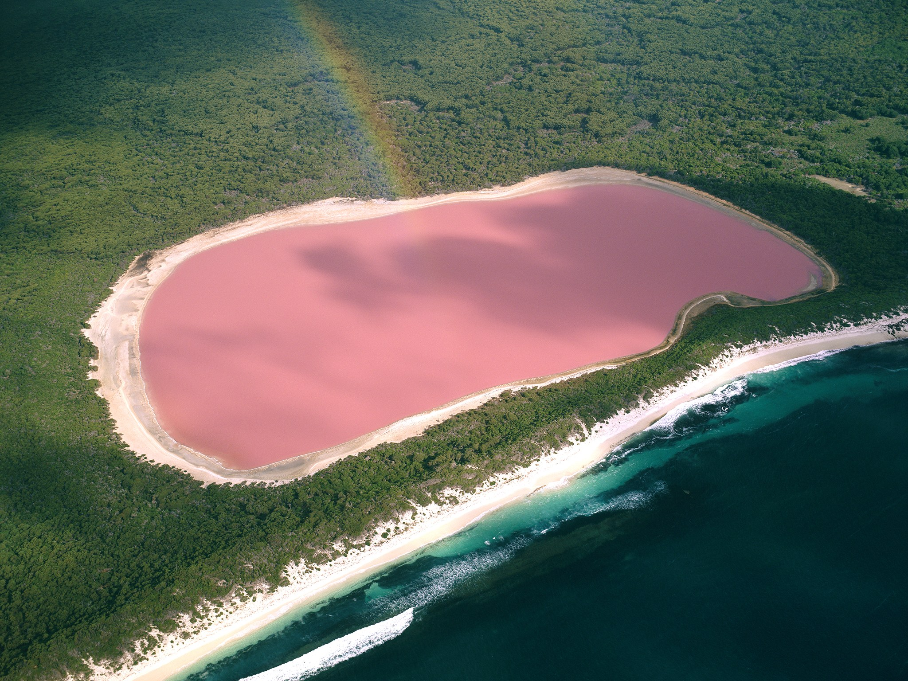
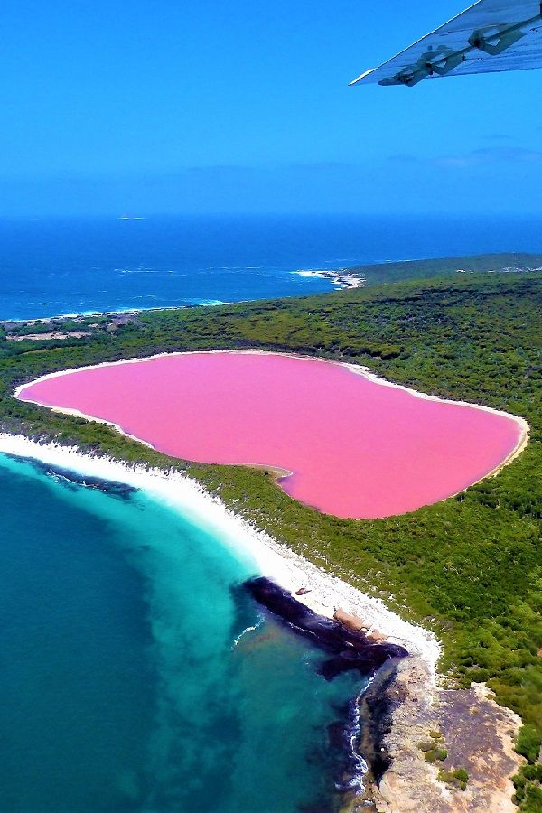
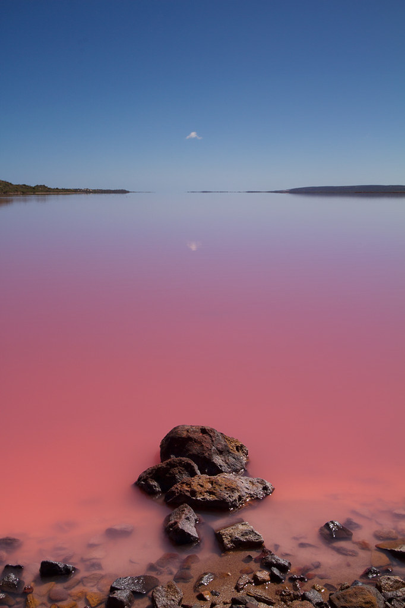
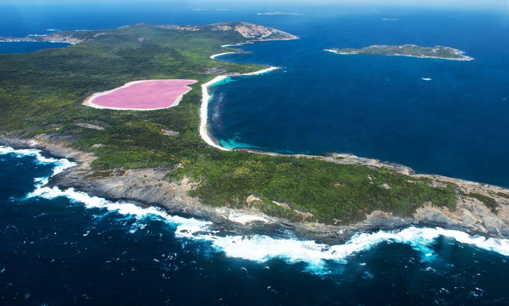

Австралия
Австралия
Большой Барьерный риф

Австралийские аборигены и жители островов Торресова пролива начали использовать ББР 40 тыс. лет назад. Они ловили рыбу, охотились в его водах и перемещались между островами рифового региона. В 1768 году корабли французского капитана Луи де Бугенвиля подошли к Австралии с востока — так европейцы впервые увидели ББР. Однако из-за шторма и нехватки еды корабли вернулись на север. Это самое раннее документальное подтверждение достижения рифа.
Большой Барьерный риф — самый крупный в мире природный объект, образованный живыми организмами. Он составляет примерно 10% экосистемы коралловых рифов на Земле. Площадь Большого Барьерного рифа равна площади целой Италии! Гряда состоит из 3000 отдельных коралловых рифов, 600 континентальных, 300 коралловых и 150 мангровых островов в Тихом океане. Риф протянулся на 2300 км вдоль северо-восточного побережья Австралии — как расстояние от Санкт-Петербурга до Екатеринбурга!
Большой Барьерный риф (ББР) зародился на шельфовой платформе, где огромные колонии рифообразующих кораллов появились благодаря небольшой глубине и несерьёзным смещениям земной поверхности. Около 65 млн лет назад Австралия откололась от Антарктиды и поплыла к северу. После образования на Антарктиде ледового щита уровень моря на Земле понизился на 100 метров. Северо-восточное побережье Австралии, оказавшейся в тропиках, создало условия для зарождения коралловых рифов.
Розовое озеро Хиллер
Хиллер – самое необычное озеро в Австралии и, возможно, самое удивительное в мире. Его главной особенностью является розовый цвет воды. Озеро расположено на юго-западе Австралии, на острове Средний - одном из 105 мелких островов, входящих в состав архипелага Исследования. По краям Розовое озеро окружено песком и эвкалиптовым лесом.
Озеро Хиллер находится на самом краю Среднего острова, от океана его отделяет лишь небольшая полоса эвкалиптов, окружающая водоем со всех сторон. Вечнозеленые деревья придают пейзажу великолепный контраст, смотрясь особенно ярко на фоне розового озера.


Озеро Хиллер является уникальным в своем роде. Каждый год к нему приезжают путешественники из разных стран, чтобы убедиться в том, что вода действительно неестественного розового цвета, даже если налить ее в отдельный сосуд, и восхититься этим творением природы. Озеро эффектно окаймляет белый пояс соли, и с высоты птичьего полета оно выглядит так, будто его писал Моне, в полной мере проявивший фантазию, или Ван Гог, немного приглушивший краски. Неудивительно, что туристы часто фотографируют Розовое озеро, именно находясь в воздухе, чтобы на всю жизнь сохранить яркие впечатления и еще раз убедиться в изобретательности природы.
Каменная Волна
Побережье Австралии славится своими волнами. Обычно они зарождаются в океане, их постоянно покоряют серферы. Но есть здесь еще одна интересная волна, которую можно «оседлать», не обладая доской для серфа, и даже не имея навыков серфера. Мало того, даже в воду не придется залезать.
В юго-западной части страны в штате Западная Австралия расположен природный феномен, который называется «Каменная Волна» или «Скала Волна» (в оригинале Wave Rock). Это естественное образование выглядит так, будто кто-то заколдовал и превратил обычную волну в камень.
Каменная волна расположена в 300 метрах от дороги Уэйв Рок Роуд и представляет собой полукруглый выступ гранитной скалы, протянувшийся с востока на запад. Гладкая, ровная структура, плавные переходы и отсутствие острых краев являются отличительной особенностью этого древнего образования.
Местные племена полагали, что каменная волна была сделана Радужным Змеем. Когда-то давно Змей выпил всю воду на земле и прополз в этих местах, оставив за собой такой удивительный след. Аборигены естественно считали Каменную Волну священным местом, где существуют духи природы. Ученые предполагают, что Каменная Волна начала формироваться более 2,5 миллиардов лет назад путем выветривания и вымывания горных пород. Но вот почему это происходило так филигранно и точно не совсем понятно. По некоторым данным миллионы лет вымывалась не сама гранитная порода, а часть поверхностного слоя земли, обнажая более твердую скалу.
Грейт Сэнд Дьюнс, Клорадо
Куранда – окруженный дождевым лесом небольшой городок на плато Атертон в 25 км от Кэрнса. Население города - всего 650 человек. На протяжении 10 с лишним тысяч лет эти места были домом для аборигенного племени джабугай (Djabugay). И сегодня можно посетить их деревню, посмотреть, как поют и танцуют коренные австралийцы, или как они добывают трением огонь, а также самому поучиться метать копья и бумеранги.
Первые европейцы появились здесь только в 19 веке. Местность, где сейчас расположена Куранда, была заселена «белыми» в 1885 году и тщательно исследована в 1888 году Томасом Беханом. Строительство знаменитой железной дороги из Кэрнса в Майолу, а позднее в Хербертон, началось в 1887 году, и уже в 1891 году дорога прошла через Куранду. Нынешнее здание железнодорожной станции было построено в 1915 году.
В начале 20 века на окружающих Куранду плантациях выращивали кофе, однако затем главной городской индустрией на долгие годы стала заготовка леса. В 1960х годах в ущелье Бэррон была построена гидроэлектростанция. На протяжении 1960-70х годов Куранда была популярным местом у австралийских хиппи и приверженцев экологичного образа жизни, а сегодня городок является процветающим туристическим курортом. Каждую неделю тысячи туристов приезжают сюда из Кэрнса по живописной старинной железной дороге, ведущей через туннели и ущелья мимо водопадов и головокружительных обрывов. Другой путь в Куранду - по канатной дороге Скайрэйл.
В Куранде находится единственный на севере Квинсленда зоопарк, в котором содержатся большие кошки и копытные. Здесь же расположены парк птиц, заповедник бабочек, реабилитационный центр для летучих мышей и заказник, в котором обитают коалы.